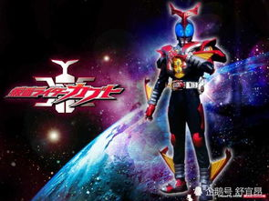
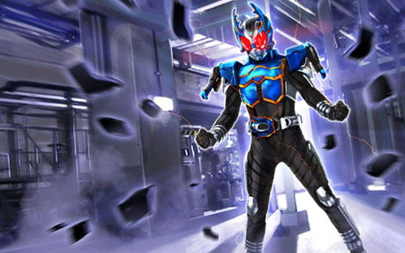
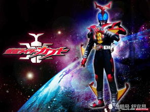
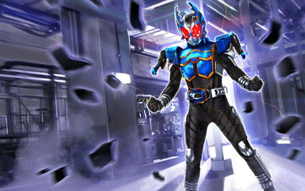

《假面骑士Kabuto》(原文:仮面ライダーカブト/Masked Rider Kabuto)，平成骑士系列的第7弹，也是假面骑士诞生35周年作品。由于是纪念作，所以再次采用昆虫造型(巨型甲虫角日语KABUTOMUSHI)的设计，配合如《假面骑士555》般充满金属机械感，当中新颖的战斗场面采用了有如"Matrix(黑客帝国)"的拍摄手法，大量CG增加了速度感及观感。超速战斗成为了本作的卖点，骑士和怪人能在超高速形态下战斗!
中文名称:假面骑士Kabuto
外文名称:仮面ライダーカブト Masked Rider Kabuto
别名:假面骑士甲斗王(新创华译)、幪面超人甲斗王
类型:特摄 科幻 真人
出品公司:
东映株式会社
简介
1999年10月19日，巨大陨石突然向地球飞来，落下并直接击中日本涉谷，周围地区因此毁灭，伤亡惨重，称为"涉谷陨石事件"。即使7年后，涉谷仍未复兴，并持续封锁中。只是灾难并未就此结束，一切才刚开始。
陨石落下后，不明宇宙生物拟态成人类活动于城市中，不断杀害人类并繁殖，造成人们的恐慌。为了消灭这些被称为Worm的生物，人类组成了一个秘密组织ZECT。但由于异虫拥有难以肉眼辨认的高速移动能力“Clock Up”，ZECT一再战败。最后的希望只剩下未及完成的武装系统Masked Rider System（假面骑士系统）。如果有能够装备这套系统，并运用自如的人出现，那么ZECT就能得到足够的力量和异虫对抗。
异虫再度出没，ZECT队员们被逼入绝境。目睹苦战的同伴，加贺美决心要成为骑士而战。但是，从空中飞来的Masked Rider System核心之一“Kabuto Zecter”，却飞到了忽然出现的天道手中。把从童年时就得到的腰带与Kabuto Zector联组在一起，天道在一瞬间被独角仙外型的装甲服包住身体，轻而易举的打倒异虫，假面骑士Kabuto就此诞生。。对于他如此桀骜不驯的态度，加贺美感到惊愕而困惑。
但是，对于不过是一介平民，而且非组织成员的天道，ZECT判定他没有资格成为Kabuto的装备者，并委托接连诞生的新骑士们，抹杀假面骑士Kabuto适能者天道总司。
与陨石掉下毁灭涉谷的宇宙生物异虫，基本形态为绿色的「幼虫」，统一的外貌有一双手掩盖面孔，遇见过的人类便能模拟对方面貌、记忆、行为及声音，在人类社会杀害及进行侵略活动，ZECT军事武器也未能使异虫损伤太多。如果从「幼虫」进化脱皮为成「成虫」，外貌就会不同，活动及破坏能力也大大提升，并可进行超越人类感知能力的加速运动性，此现象被称为「超速化」（补充甲斗是操控粒子控制时间流形成加速，也即是外面看起来速度很快但对他自己而已速度是不变的乃木的特殊CU的定义是比HCU更快，近似于时间停止（光速）的技能，就是说HCU快不过光速）。

 


